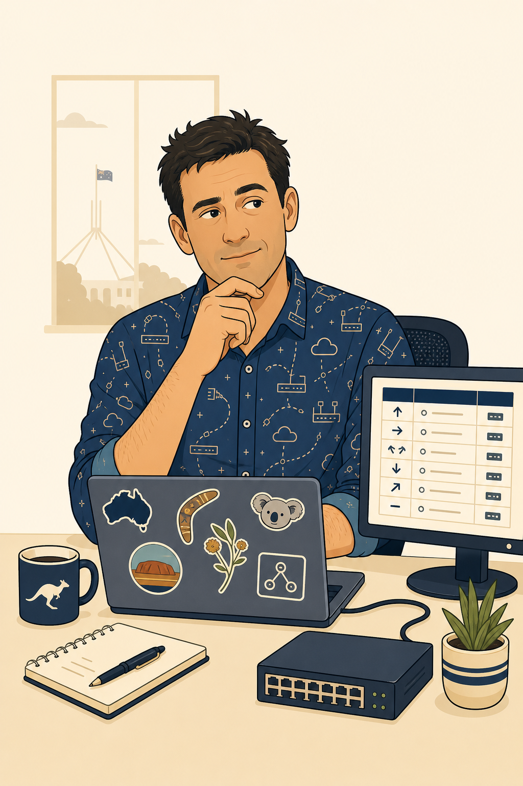
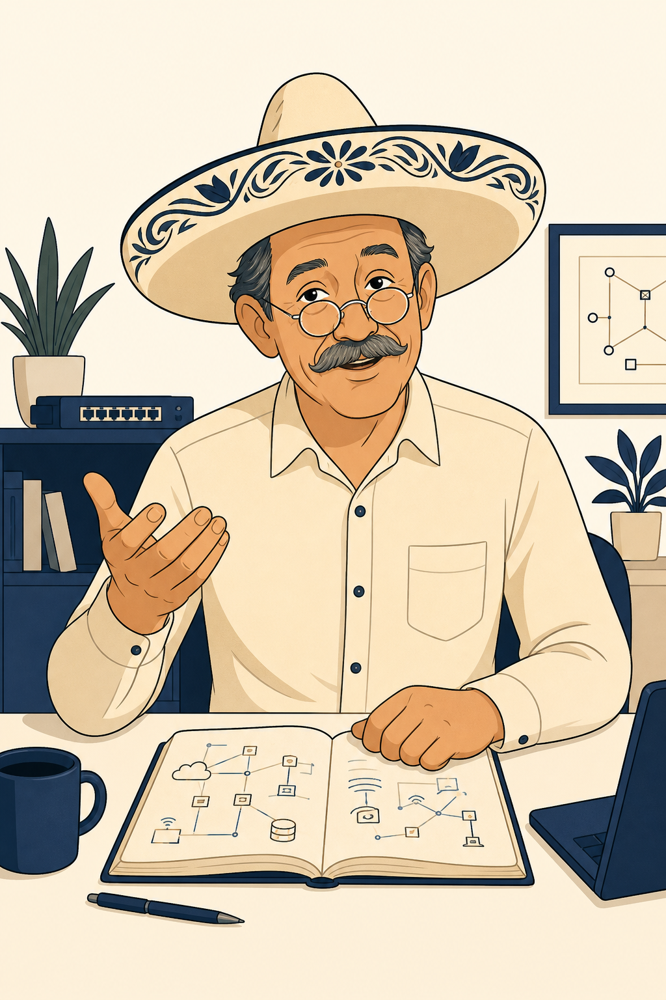
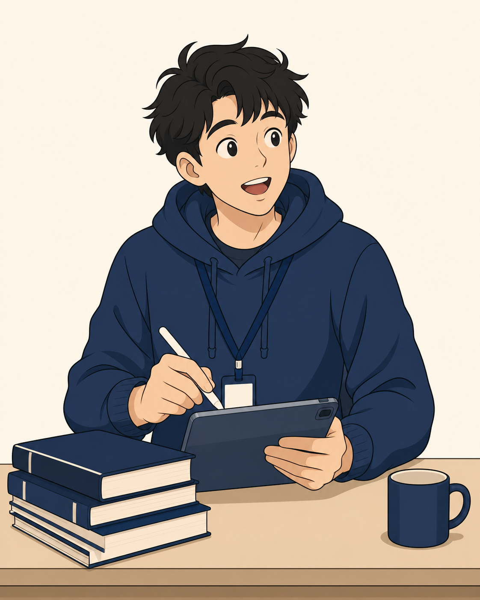
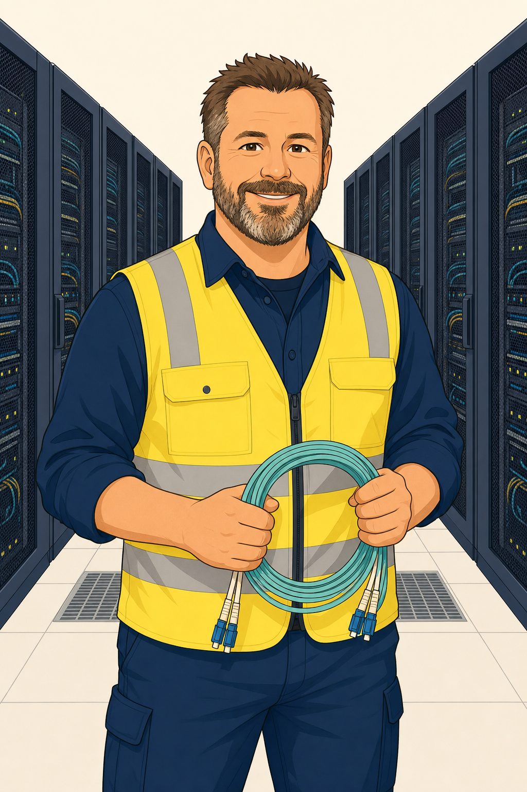
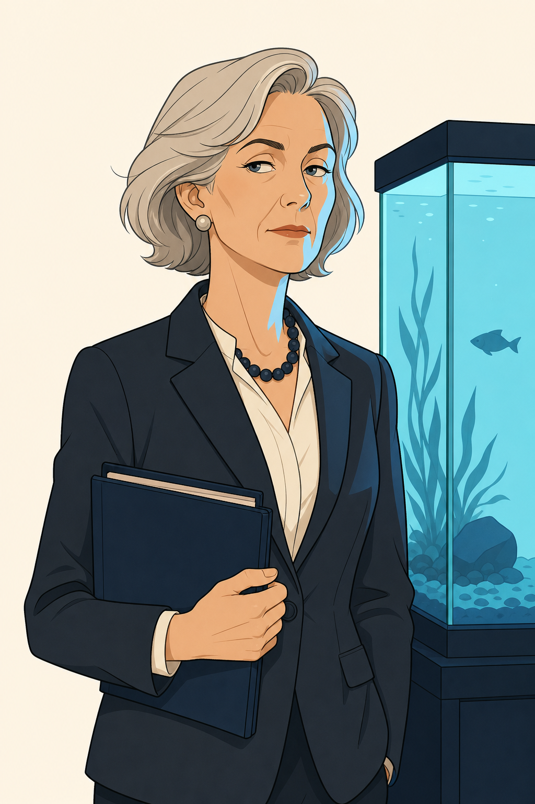
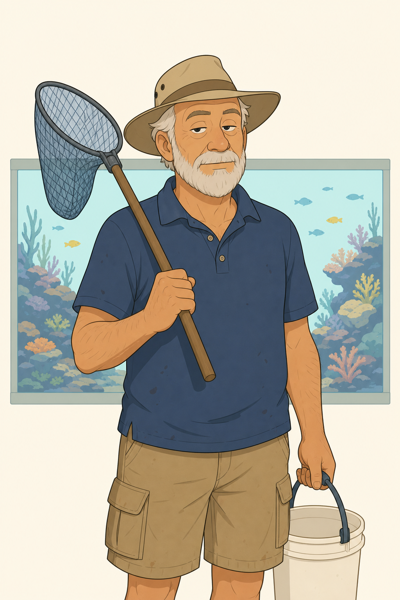
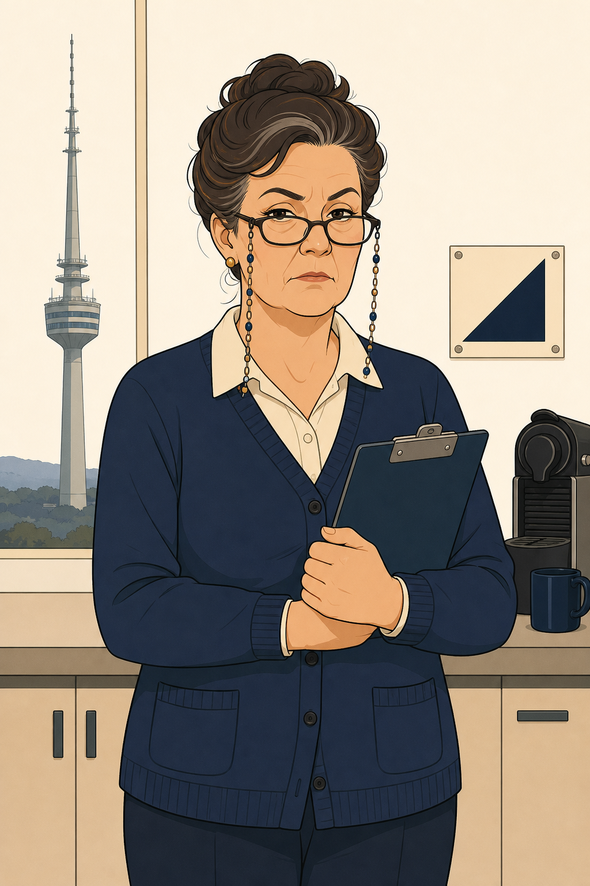
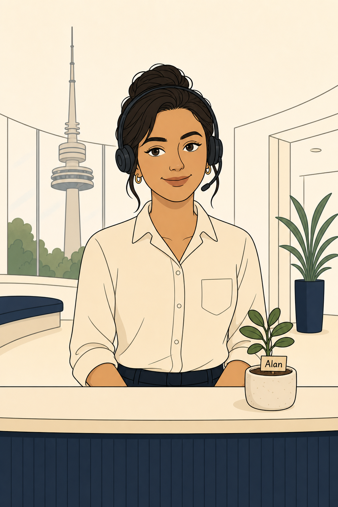
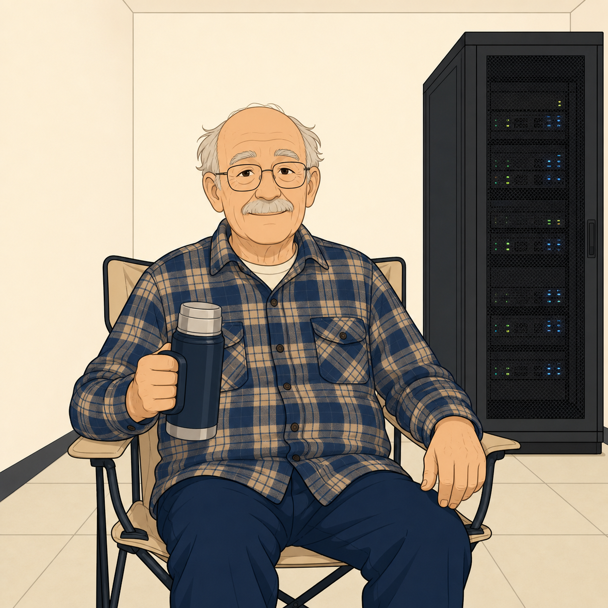

The Core Cast
Samwise, Señor Gonzalez, Junior, Mel, Aisha, Racks, Priya, Dr Finch — the seven characters the study project turns on.
images/prompts.txt.Ten years of Fortinet admin work and a rising suspicion he might already be the most senior engineer in the building. Strong operational instincts. Occasionally reaches for the CLI before he’s worked out where the decision actually gets made.

images/prompts.txt.Wears the sombrero everywhere except the cold aisle at Tuggers. Nobody has ever explained the sombrero and, per an unwritten understanding, nobody will. Coaches by asking precise questions and offering progressively stronger hints. Treats Samwise more like a peer with every passing episode.

images/prompts.txt.Asks the questions everyone else was too embarrassed to ask, and therefore does more for the team’s comprehension than any senior does. Gradually learns to form independent hypotheses. Owns three identical hoodies and rotates them without explanation.
images/prompts.txt.Exacting about templates, mappings, revisions, and installation targets. Maintains a personal spreadsheet of every metadata variable in the estate, which she updates faster than FortiManager itself. Has never lost an argument about whether a change should live in a template or a per-device override.
images/prompts.txt.Runs the SOC out of a dark corner of Level 8. Evidence-driven to the point of being pointed about it: no change lands if it’s only supported by vibes. Owns the incident register, the log retention policy, and, according to a quiet HR note, the last word.

images/prompts.txt.Cables, optics, HA cables, cross-connects, and the physical failure domains nobody else wants to draw. Splits his week between Tuggers and Gunners and can identify a failed SFP by the sound it makes. Refers to a truck roll as “going for a bit of a drive.”
images/prompts.txt.The translator. Turns “the SD-WAN rule reordered and the SIP session went with it” into “licensing calls dropped for eleven minutes and the phones lit up.” Owns the service catalogue and the awkward conversations that follow every incident. Cheerfully unwilling to accept a fix without a user-facing outcome attached.

images/prompts.txt.Career public servant. Wants a risk in one sentence, a business impact in the next, and a mitigation in the third. Nothing further. Takes a slow lap of the fish tank before signing anything of consequence, which is either superstition, decision hygiene, or both.
The Supporting Cast
Four people who never appear in an ADR but without whom nothing would actually work.
images/prompts.txt.Not on the payroll. Invoices through a company called “Deep End Aquatics Pty Ltd,” which has one employee. Arrives at 06:00 sharp, feeds the fish, tests the water, leaves before anyone can ask him anything. Nobody knows where he parks. Nobody has ever seen him drink coffee.

images/prompts.txt.Runs the building the way Mel runs FortiManager. Knows exactly which floor has the good coffee, which lift is genuinely broken, and which meeting room’s HDMI cable has “had it.” Correspondence with the building manager is professional, brief, and quietly devastating.

images/prompts.txt.The first person a vendor meets, and the last person a departing contractor sees. Has effectively been running informal access control at the building for longer than anyone in the SOC has been employed. Rangi’s personal plant, Alan, sits on the reception desk and is thriving.

images/prompts.txt.Has been at Tuggers since before the Department of Fish existed. His job title has changed six times, his office has not. Occupies the annex — one rack, one lawn chair, one thermos. Nobody knows who signs his timesheet. Nobody has ever seen him touch the rack.